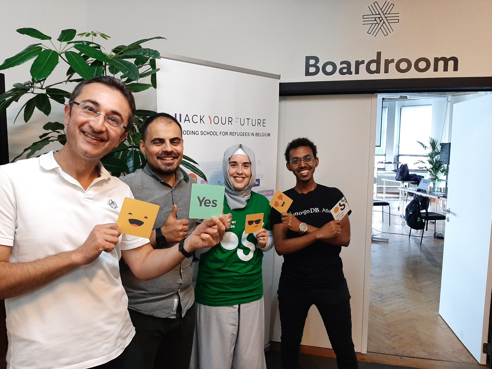
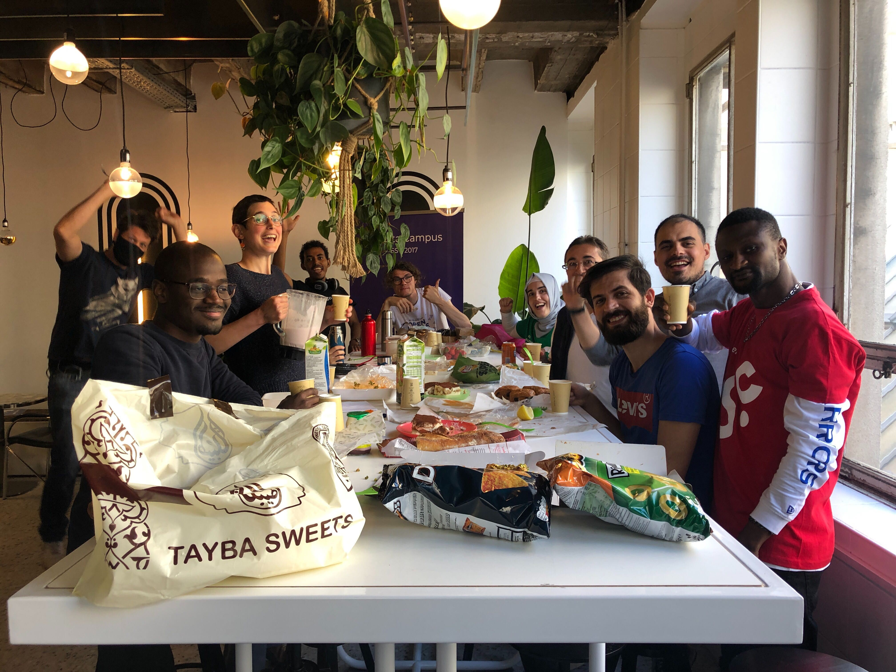

|
Your new career starts here
|

|
|
HackYourFuture is a free 9-month front end web development
program for refugees, newcomers and ‘anderstalige’ jobseekers
passionate about code and web development. You don’t need any
technical background to start, only loads of motivation.
If you want to kickstart your career in the IT sector, take your chance! Women are strongly encouraged to apply! We are launching two new web-dev classes, one in ANTWERPEN and one in BRUSSELS Applications for these new classes starting in March are open now |
|
WHO CAN APPLY?
|
|
|
We teach motivated refugees and newcomers with limited access to
education or the labor market who want to start their career in
web development. The course is open to anyone staying in
Belgium. Women are strongly encouraged to apply!
|
|
9-months program
|
|
||||||
|
BUT THAT'S NOT IT
|
 |
|
Final Project
We challenge our graduates to a 6-weeks final project
sprint, where they build open source projects with a social
impact. During the final project spring, the students get
acquainted with new skills, discover new ways to
collaborate, processes and learn about the industry best
practices that are expected in the local labor market.
|

|
Towards a job: Mentorship Program
|
|
Career guidance is an essential part of our program, as the
real challenge for our graduates is finding an internship or
job as a junior web developer. Thanks to our voluntary
mentors, we offer our students a career guiding journey when
graduating from our program. Each student has its own
mentor, who helps with updating their CV and LinkedIn
profile, writing a motivation letter, doing a mock
interview, and leading them through the job-hunting jungle
in the IT sector.
|
|
Career Skills Sessions
|
 |
|
On Sunday mornings, before class starts, we regularly
organize Career Skills Sessions. These are inspirational
sessions by experts, within and outside the IT and HR
sector, to share their knowledge with our community. It can
be about how to organize a healthy work environment, it may
as well be about how to constantly keep updated as a junior
web developer. In other words, highly valuable mornings!
|